Template Matching - Samir
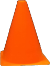
Figure 8: Template Cone for Template Matching
Rescaling
Edge Detection
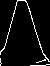
Figure 9: Canny Edge Detection on the Template Image
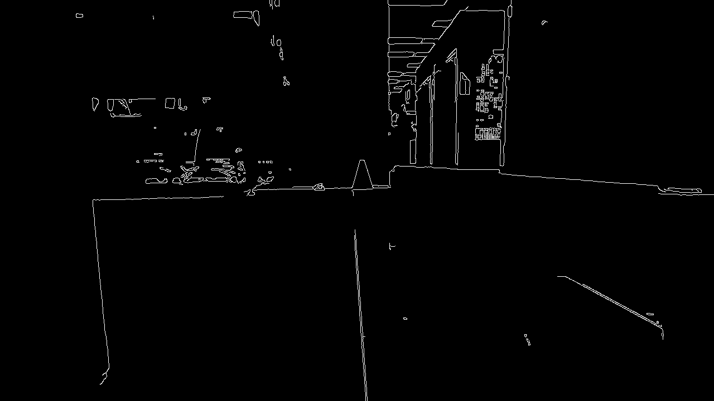
Figure 10: Canny Edge Detection on the Test Image
Results
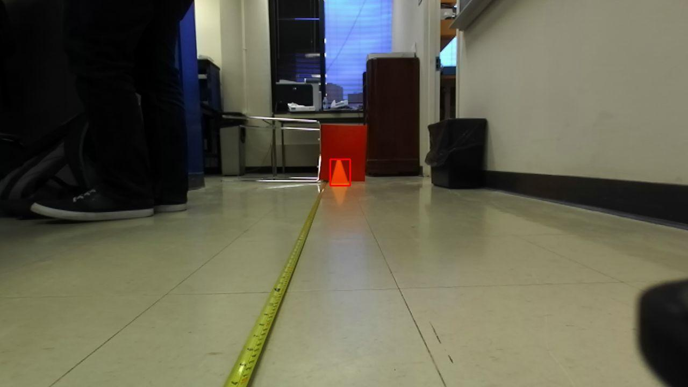
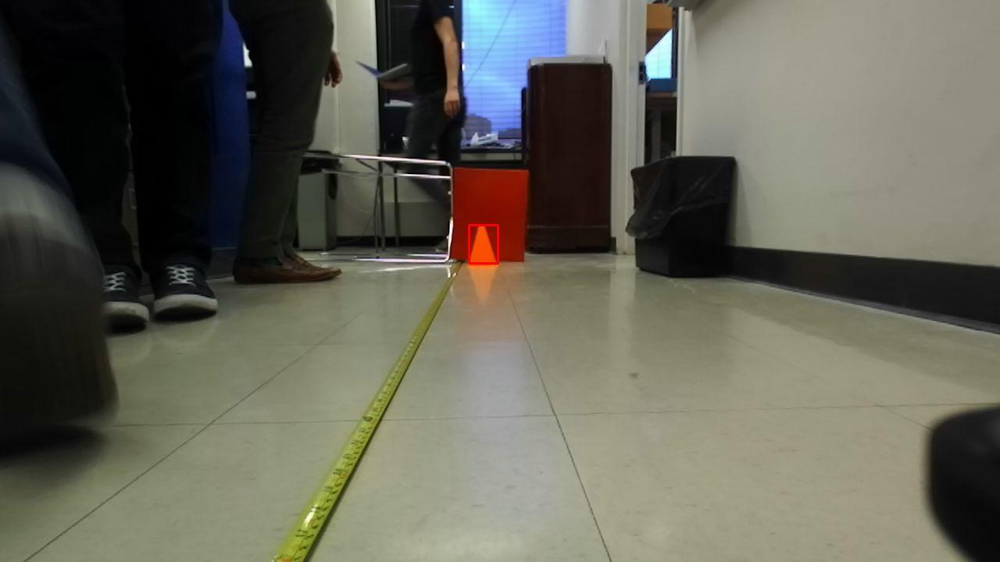
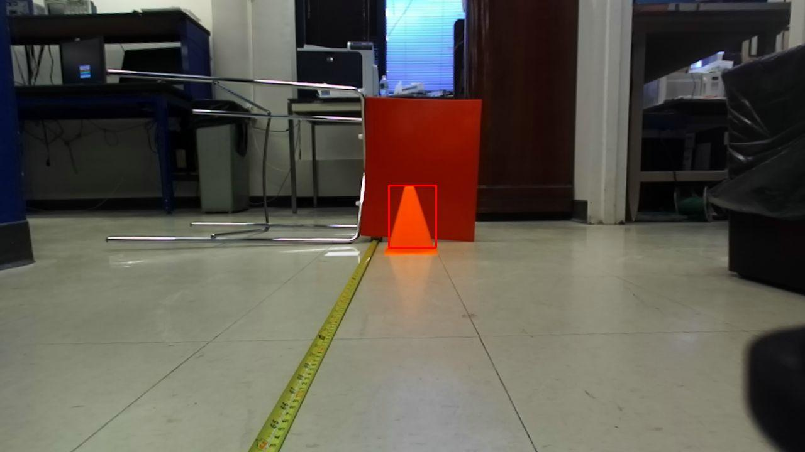
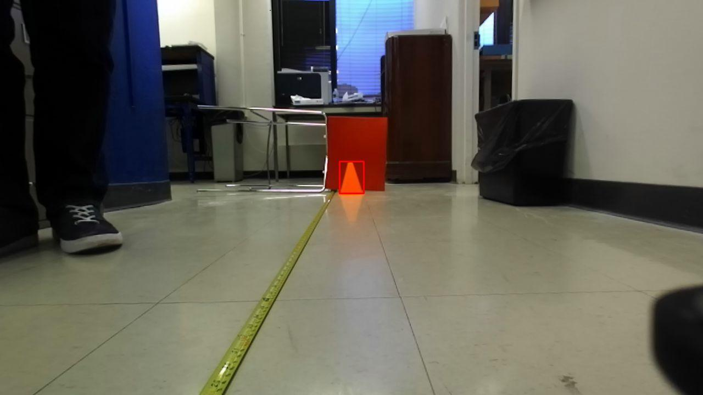
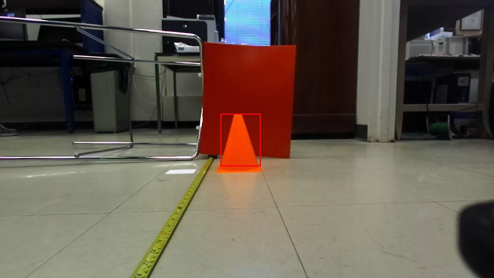
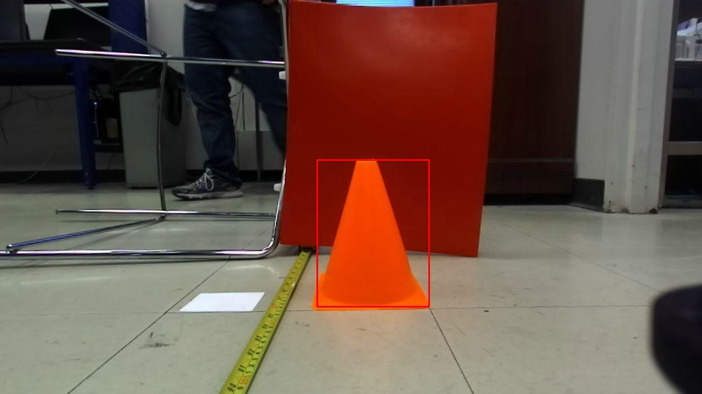
Figure 11: Template Matching Results
Determining the Distance to the Cone using Polynomial Fit - Nick
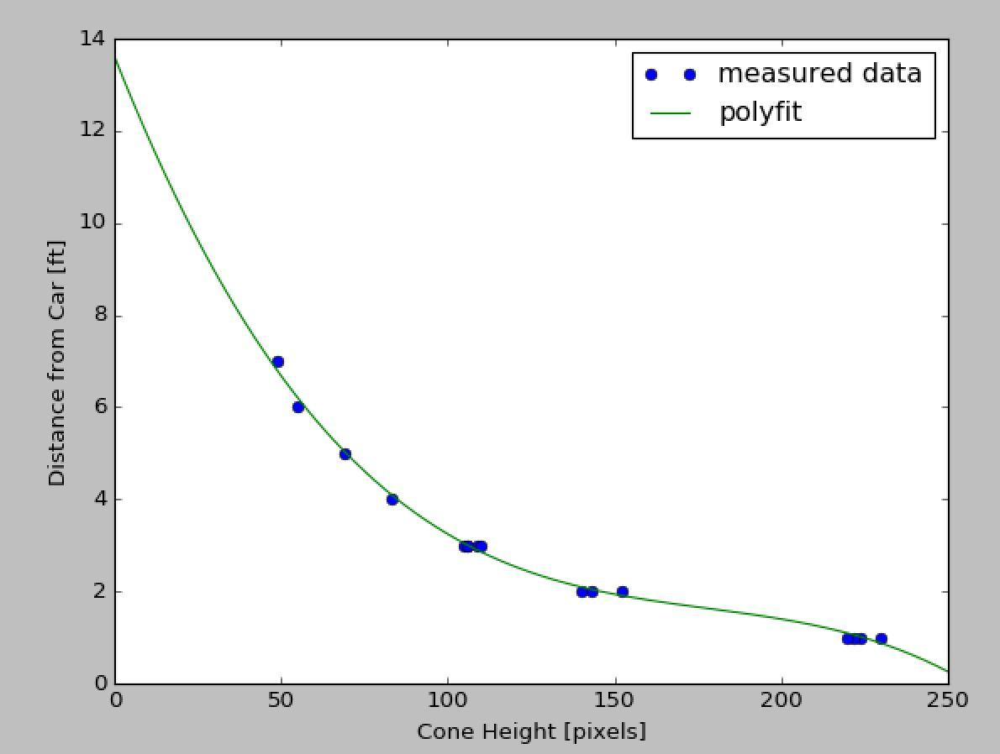
Figure 12: Pixel Height to Distance
Parking Control
Node Diagrams for Different Controllers - Samir
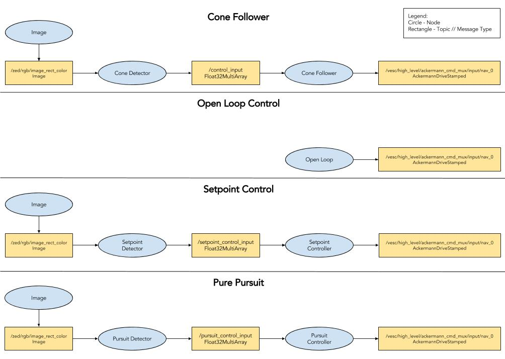
Figure 13: Layout of Nodes and Topics
Vehicle Controllers for Cone Following and Parking - Samir & Nick

Path Following
Open Loop Control - Jake

Setpoint Control
Line Detection - Jose
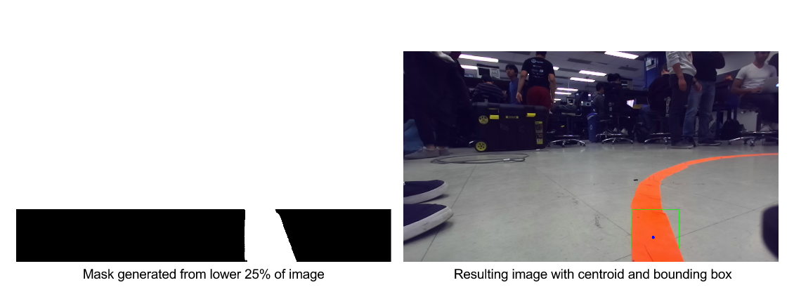
Figure 16: Cone detector strategy implemented on path
Setpoint Control Implementation - Samir
Calibration and Tuning

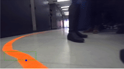
Figure 18: First person view from car of following a more complicated path with the setpoint controller.
Trajectory Tracking
Plotting the Trajectory - Jose & Martina
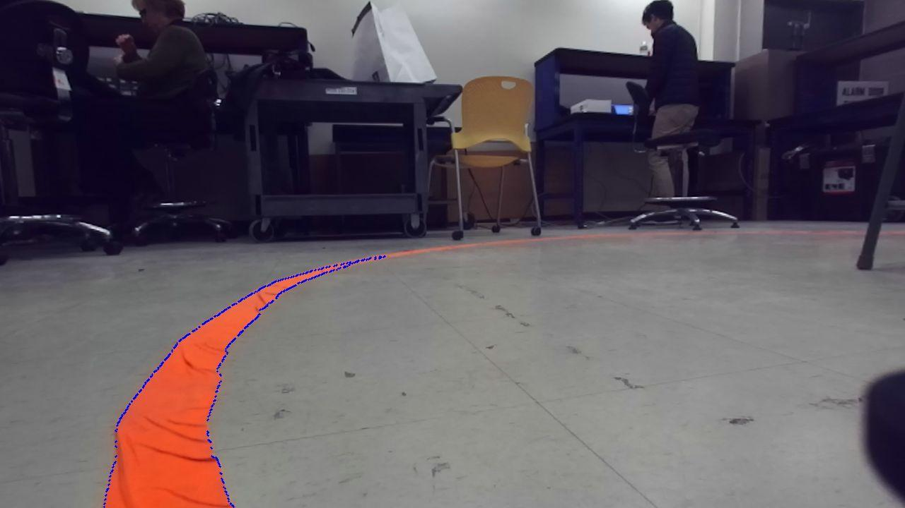
Figure 19: Contours of the tape line.
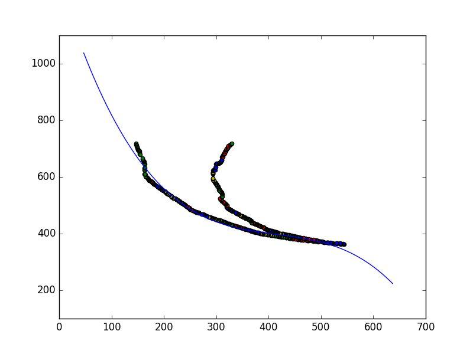
Figure 20: Raw contour data, show as points, and the polynomial fit to our contour data, the blue line.
Image to World Coordinate Transformation - Samir
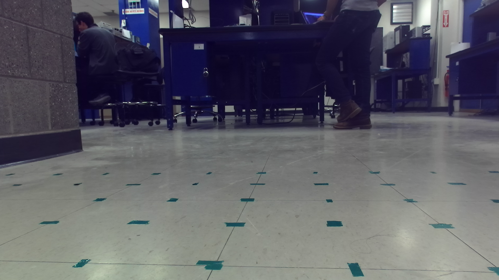
Figure 21: Gathering data for transformation
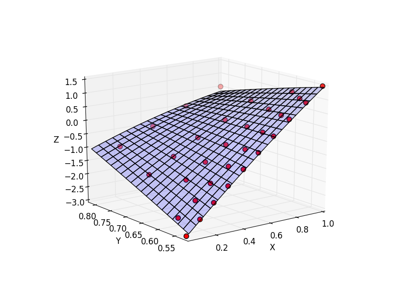
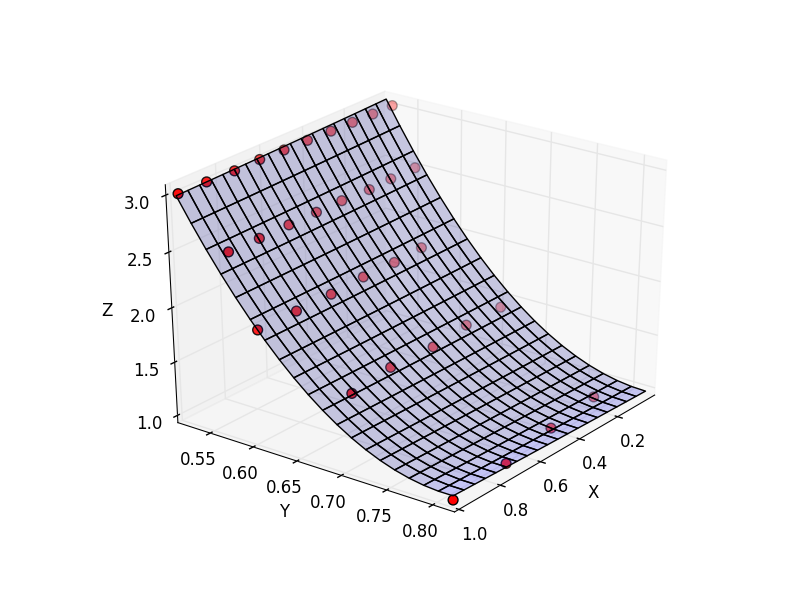
Figure 22: Surface Fits from (u,v) to x (left) and y (right)
Pure Pursuit Control - Clemmie & Nick
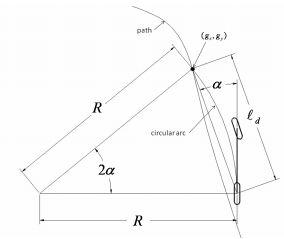
Figure 23: Pure pursuit geometry with lookahead distance measured from rear axle. Source: www.ri.cmu.edu
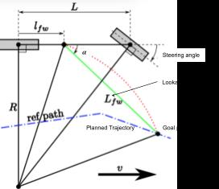
Figure 24: Pure pursuit geometry with lookahead distance measured in front of rear axle. Source: 16.405 Lecture Slides - “Control Systems”
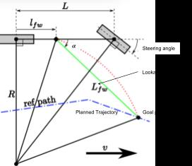
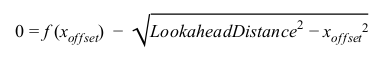
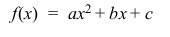
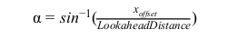
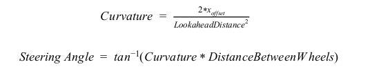
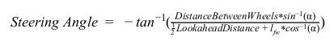
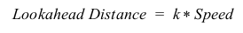

Experimentation of Controllers
| Control Type | Maximum Number of Laps | Maximum Lap Speed |
|---|---|---|
| Open Loop | 3 | 2.0 |
| Setpoint Control | Inf | 4.0 |
| Trajectory Tracking | 2 | 1.0 |